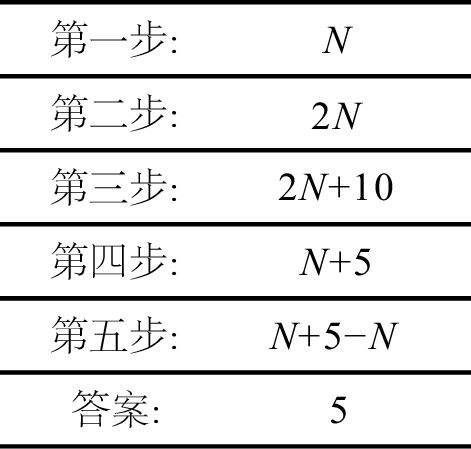

小时候，我第一次接触代数是通过我父亲。他说：“孩子，代数与算术没有多大区别，不过是用字母来代替数字。例如，2x + 3x = 5x，3y + 6y = 9y。明白了吗？”我回答说：“好像明白了。”他接着说：“好的，那么5Q + 5Q是多少？”我信心满满地答道：“10Q。”他说：“声音太小了，大点儿声！”于是，我高声答道：“10Q！”结果，父亲回说：“不用谢！”[1]（父亲对双关语、开玩笑和讲故事的兴趣一直都比对数学教学的兴趣大，因此我从一开始就不应该完全相信他说的话！）
我第二次接触代数，是因为我想弄明白下面这个魔术的原理：
第一步：在1到10中选择一个数字（你也可以选择一个大于10的数字）。
第二步：把这个数字加倍。
第三步：加上10。
第四步：除以2。
第五步：减去你一开始选择的那个数字。
我猜你得到的数字一定是5，对吗？
这个魔术背后的奥秘是什么？是代数。我们从第一步开始，把这个魔术再回想一遍。我不知道你一开始时选择的是哪个数字，因此我们用N来表示它。当我们用一个字母来表示未知数时，这个字母就被称为“变量”（variable）。
第二步，你把这个数字加倍，它就变成了2N。（由于字母x经常被用作变量，因此我们通常会省略乘号，以免混淆。）第三步，这个数字变成了2N + 10。第四步，在除以2之后，这个数字变成了N + 5。第五步，减去你一开始选择的那个数字，也就是N。从N + 5中减去N，得数是5。我们可以如下简要地表示这个魔术：
